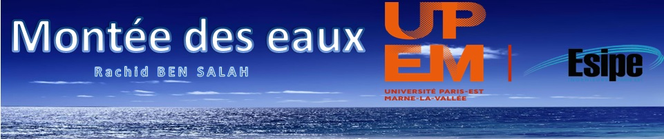
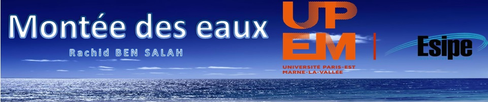

Bienvenue sur la carte de montée des eaux.
Cette carte présente la supposée montée des eaux dans le monde entre 10 et 70 mètres.
Pour rendre la carte utilisable et compréhensible, j'ai ajouté une couche des continents,
une couche des pays, une couche des limites administratives et une couche des villes.
Ces couches vont nous permettre de voir les parties du monde qui seront noyées suite aux importantes
montées des eaux.
J'ai également mis en place une légende dynamique pour voir les couches actives sur la carte.
Les sources des données continents, pays, administrations et villes se trouvent ici :
Données
La source de MNT utilisé pour les niveaux de montée des eaux se trouve ici (Mot de passe : ThanksCSI!) :
MNT
-----------------------------------------------------
✉ :
rachid.bensalah3@gmail.com
 
